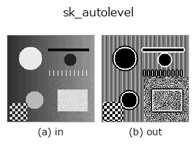

gray op• Data kinds: image → image
• Call: fullseye.apply(img, "sk_autolevel", a=0.5, b=0.5) (2-D model = एक image + दो scalar knobs a,b∈[0,1])
• HALCON समकक्ष: scale_image_max (अर्थ और parameters समझने के लिए HALCON reference उपयोगी है)

*Figure synthetic 128×128 input पर सच में चलाकर मिला output है। बाईं ओर input, दाईं ओर output। Point clouds ऊपर से देखे गए scatter के रूप में (brightness = z), 1-D series line के रूप में, volumes z दिशा में maximum-intensity projection के रूप में, videos बीच के frame के रूप में, complex images amplitude के रूप में, और जो return values चित्र नहीं बन सकते वे स्वयं values के रूप में दिखाए जाते हैं।*
Knob a को बदलकर (0.1 / 0.5 / 0.9, दूसरा knob default पर):
▸ sk_autolevel: knob a को बदलने का figure (docs site)
*Knob b output नहीं बदलता (मापा गया: 0.1 / 0.5 / 0.9 पर एक जैसा)।*
दूसरी images पर भी (synthetic scene / photo / coins। ऊपर की row में inputs, नीचे की row में उनके outputs। Knobs default पर):
▸ sk_autolevel: दूसरी images पर output (docs site)
*चौथा column colour (H,W,3) input है। यह op channels को पार किए बिना colour संभालता है (colour channel को तीसरे spatial axis की तरह convolve नहीं करता)।*
Local auto-level। हर pixel के आसपास के local histogram के न्यूनतम से अधिकतम तक के मानों को पूरे 0 से 255 तक फैलाता है —— global tone के बजाय हर जगह के लिए contrast को अधिकतम करने वाला adaptive level correction।
HALCON के scale_image_max(Maximum gray value spreading in the value range 0 to 255.) के बराबर (approximation; HALCON version पूरी image पर, यह हर local window पर)। implementation filters.rank.autolevel(_u8s(v), disk(1+int(a*3))) को 255 से भाग देता है — a disk की radius को 1-4 पर बदलता है। b उपयोग नहीं होता। ध्यान दें कि लगभग uniform क्षेत्रों में noise भी तेज़ी से खिंच जाता है।
Precision (मापा गया): अंदर 8 bit (256 levels) में quantise किया जाता है (output ठीक k/255 के grid पर आता है)। float64 देने पर भी वह precision नहीं बचती — 16-bit camera का step (लगभग 1.5e-5) 1/255 = लगभग 3.9e-3 तक round हो जाता है, और 1/255 से कम अंतर वाली 2 images एक ही उत्तर देती हैं। बहुत छोटे intensity अंतर मापने में, या output को आगे differentiation या regression में देने पर quantisation के steps दिखते हैं, इसलिए ऐसा op चुनें जो 8 bit से होकर न गुज़रे।
खाली frame (मापा गया): एक समान brightness वाली image देने पर brightness चाहे जो हो, परिणाम खाली होता है (सभी pixels background 0)। पूरी सफ़ेद हो या पूरी काली, एक जैसा व्यवहार होता है; केवल brightness से कुछ detect नहीं होता।
• gallery2d_gray_arith family guide
• Sample data catalog (DL URL / license) — 2-D के लिए skimage.data (BSD/public) + synthetic, 3-D के लिए real data sources (Stanford/PDS आदि) के DL URL।
• Operators का स्रोत और संदर्भ — इस op family के मूल research/methods के स्रोत।
• Algorithm का मानक स्रोत (लेखक, वर्ष) और उपयोग ऊपर की family usage guide में दिए गए हैं।
नीचे का program सच में चलता है, यह जाँचा गया है (figure वाला ही input)। Studio की help में यह block buttons बन जाता है, जिनसे इसे वहीं load करके चलाया जा सकता है।
sk_autolevel 0.50 0.50
▸ यह pipeline load करें · Load करके चलाएँ
• gallery2d_gray_arith — py -3.11 examples/gallery2d_gray_arith.py
image को input के रूप में लेते हैं)identity · gaussian · mean_box · bilateral · unsharp · median · min_filter · max_filter
gray)gamma · quantize_uniform · quantize_lloyd_max · quantization_error · dither_ordered · dither_floyd_steinberg · companding_mu_law · banding_map
*Provenance: ops.py — 2D operator registry. यह per-op note tools/opdocs.py md से अपने-आप generate होता है (हाथ से edit न करें)।*
© 2026 Kazufumi Furuse — Fullseye operator documentation. Licensed under Apache-2.0.